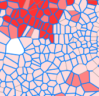

Urban Morphogenesis
Coevolution of Road Network and Land Lots
M. Achibet, S. Balev, A. Dutot, D. Olivier
Université du Havre
ECCS '12 - September 6th

M. Achibet, S. Balev, A. Dutot, D. Olivier
Université du Havre
ECCS '12 - September 6th

|
Each cell:
|
A cell represents a spatial subdivision.
A cell has a state.
A cell has a neighborhood.

Generalization : graph-based cellular automata.


Our urban growth model has to:

Voronoi cell V(g) contains all points closest from the generator g than any other generator.

Two urban elements considered:
Can have two forms:


|
The urban growth is two-dimensional:
|

|
Gist of the model:
Three levels of density:
An affinity matrix:
A transition score:


|
 |
→ Voronoi diagram with polygonal generators